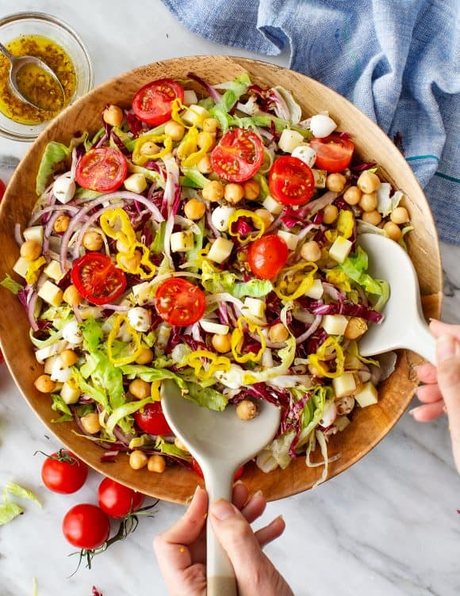

Chopped Salad

Description
This chopped salad recipe may be light and healthy, but it's still packed with bold flavor.
Ingredients
- Iceberg lettuce and radicchio
- Red onion
- Cherry tomatoes
- Chickpeas
- Pearl mozzarella and provolone cheese
- Pepperoncini
- A lemon vinaigrette
- Dried oregano
Steps
- Make the dressing. In a small bowl, whisk together the olive oil, lemon juice, vinegar, shallot, garlic, oregano, salt, and pepper, and set aside.
- Cut the iceberg lettuce in half through the core, then cut out the core. Slice the lettuce lengthwise into 1/4-inch strips. Repeat with the radicchio.
- In a large bowl, combine the lettuce, radicchio, tomatoes, chickpeas, mozzarella, provolone, and pepperoncini. Drizzle with the dressing and toss gently to coat. Season with salt and pepper and toss again. Sprinkle with extra oregano, and serve.